从用户提供的 Steam 商店页实际获取的 14 张官方截图。不是搜索结果缩略图，也不是生成图。本页归档界面布局、场景层次和美术语言，为「风栖原野」单人浏览器原型提供参考。
草地和白花构成细密前景，主角与伊莫形成中景焦点，蓝色崖壁、远山与大树拉开纵深。柔和阳光，不使用写实暗黑调色。
轻量白色图标、圆形小地图和伙伴头像，界面贴边，尽量让出世界。图鉴使用独立的角色卡片；捕捉状态紧贴生物。
公开图片和预告可以作为风格研究资料，但没有从这些页面获得可直接复用的官方模型、动画和完整UI源文件。原型为原创简化几何与材质，不宣称原版1:1资产。
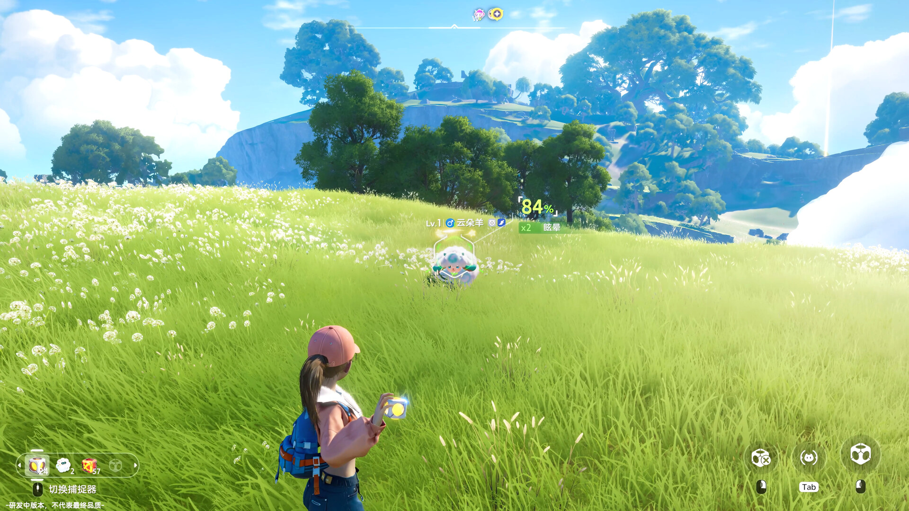
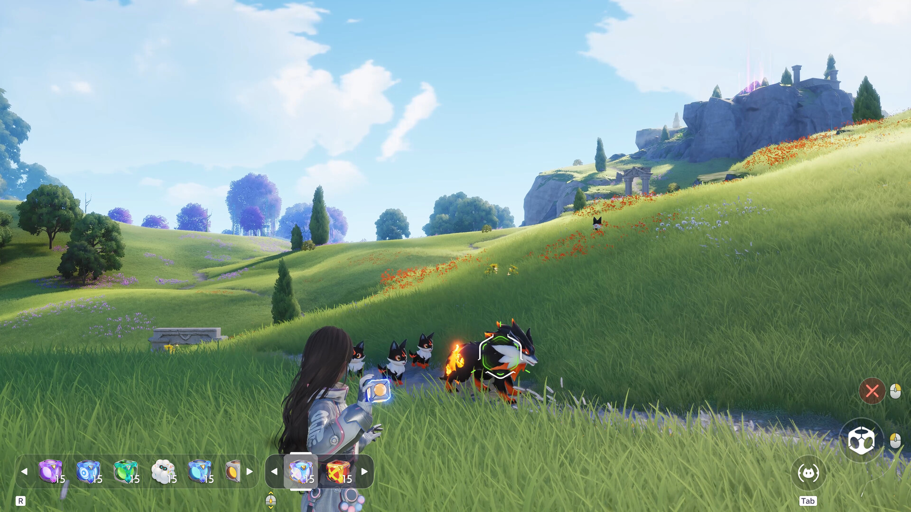
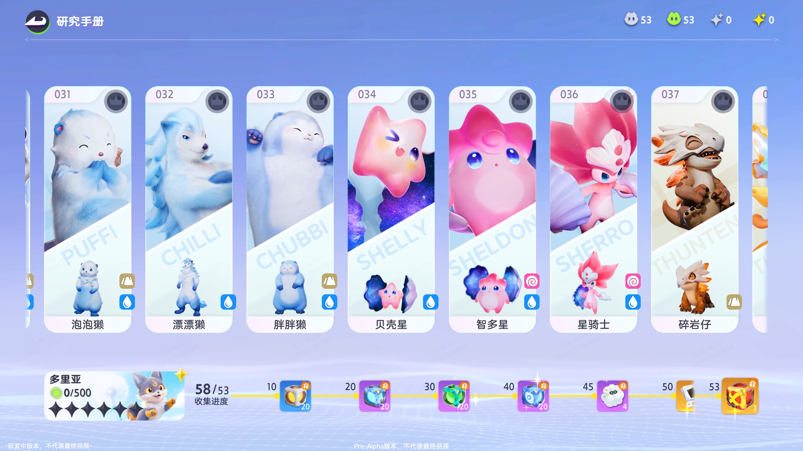
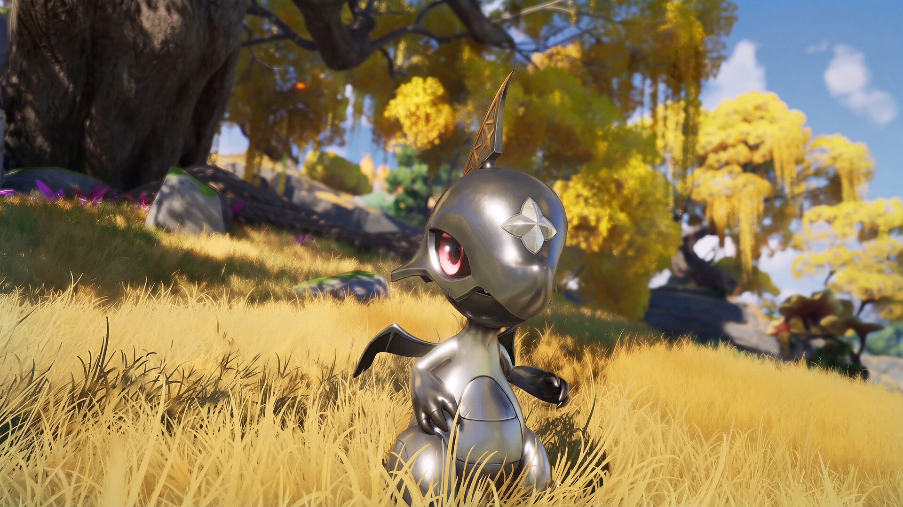
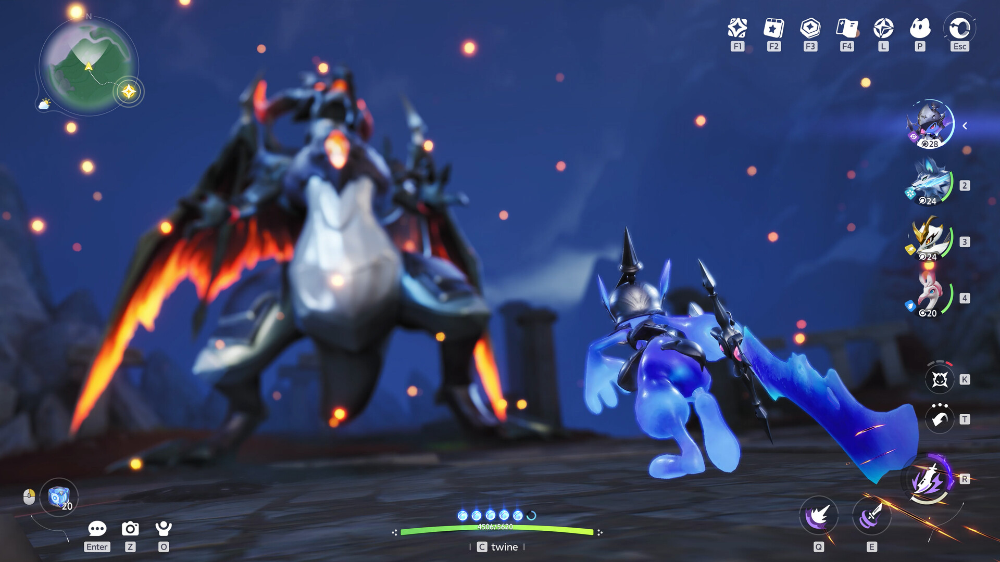
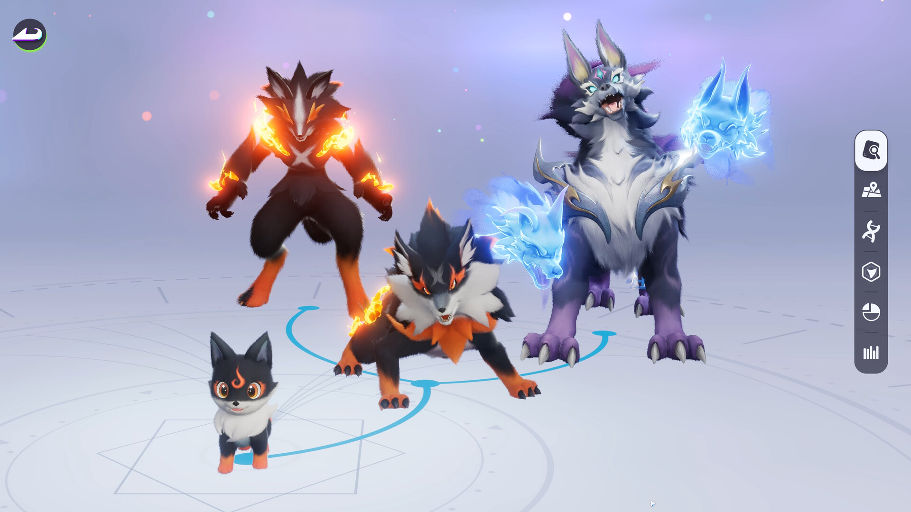
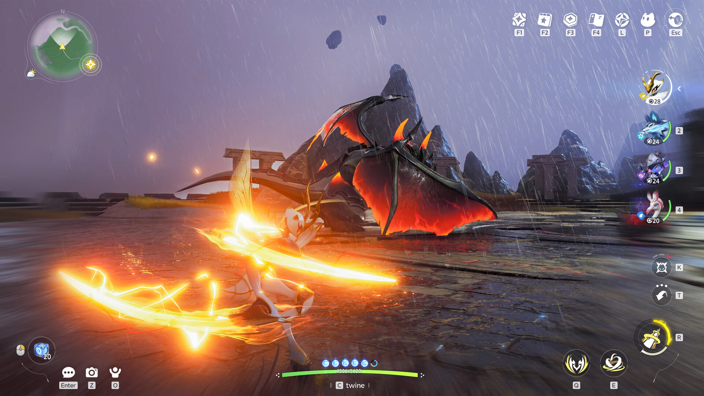
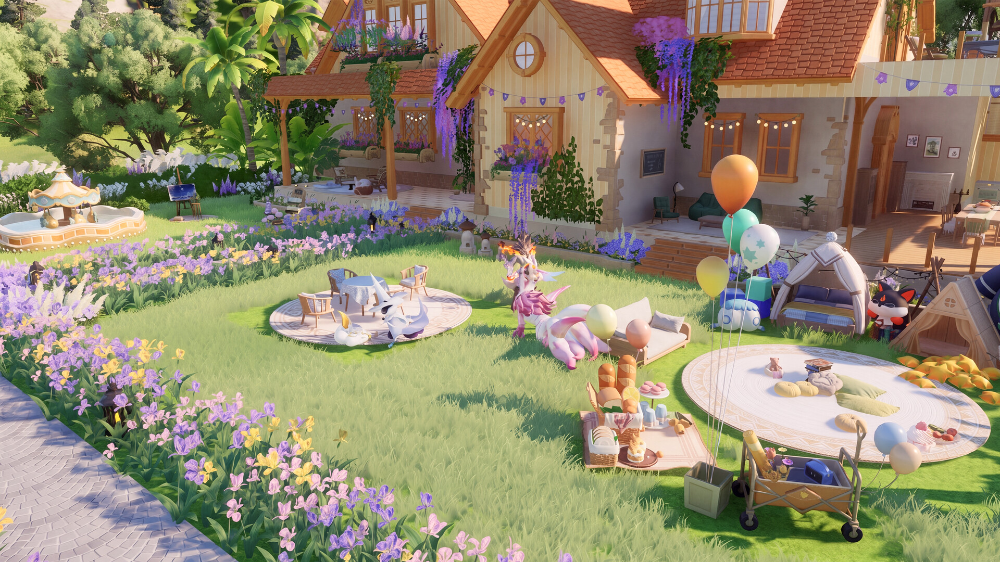
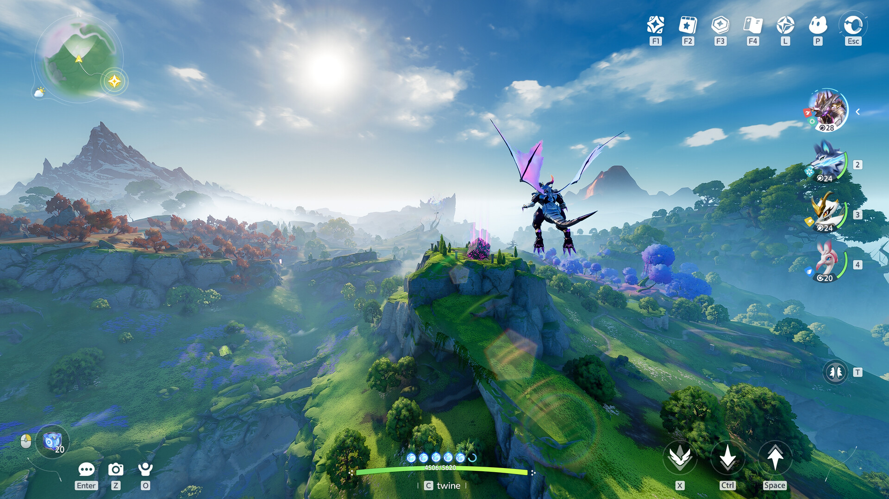
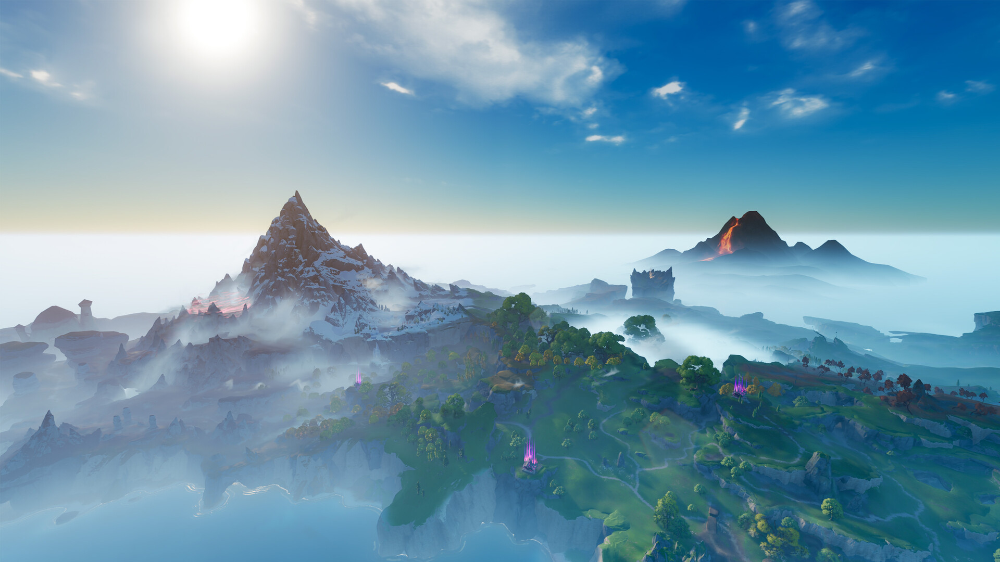
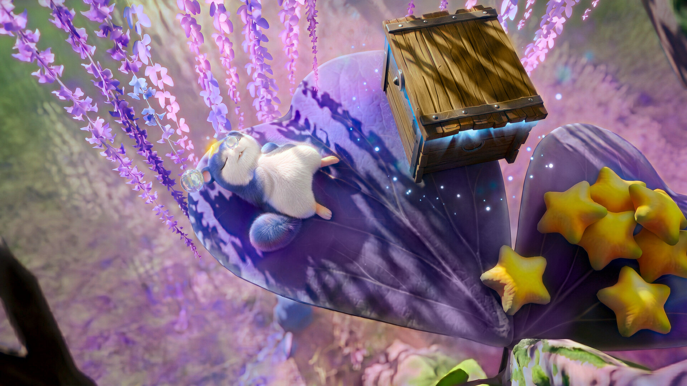
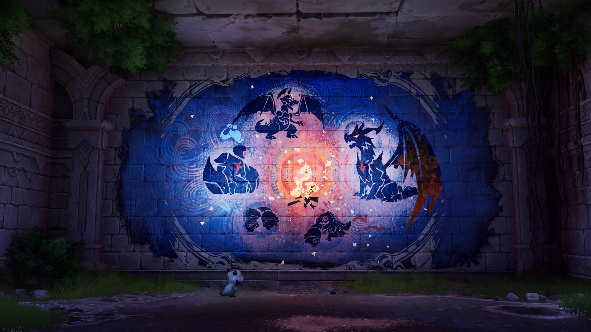